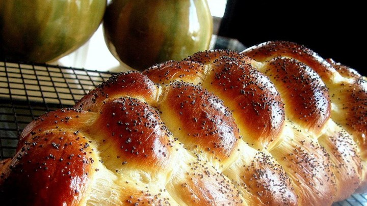

Challah
"Traditional egg bread for the Jewish Sabbath. You can add 1 cup
raisins or golden raisins to the dough just before shaping and then
make the loafs into round braids for Rosh Hashanah."
Recipe by: Joan Callaway

Ingredients:
- 2 1/2 cups warm water (110 degrees F/45 degrees C)
- 1 tablespoon active dry yeast
- 1/2 cup honey
- 4 tablespoons vegetable oil
- 3 eggs
- 1 tablespoon salt
- 8 cups unbleached all-purpose flour
- 1 tablespoon poppy seeds (optional)
Directions:
- In a large bowl, sprinkle yeast over barely warm water. Beat in honey, oil, 2 eggs, and salt. Add
the flour one cup at a time, beating after each addition, graduating to kneading with hands as
dough thickens. Knead until smooth and elastic and no longer sticky, adding flour as needed.
Cover with a damp clean cloth and let rise for 11/2 hours or until dough has doubled in bulk.
- Punch down the risen dough and turn out onto floured board. Divide in half and knead each
half for five minutes or so, adding flour as needed to keep from getting sticky. Divide each half
into thirds and roll into long snake about 11/2 inches in diameter. Pinch the ends of the three
snakes together firmly and braid from middle. Either leave as braid or form into a round
braided loaf by bringing ends together, curving braid into a circle, pinch ends together. Grease
two baking trays and place finished braid or round on each. Cover with towel and let rise about
one hour.
- Preheat oven to 375 degrees F (190 degrees C).
- Beat the remaining egg and brush a generous amount over each braid. Sprinkle with poppy
seeds if desired.
- Bake at 375 degrees F (190 degrees C) for about 40 minutes. Bread should have a nice hollow
sound when thumped on the bottom. Cool on a rack for at least one hour before slicing.
Original Challah Recipe
Contact Me